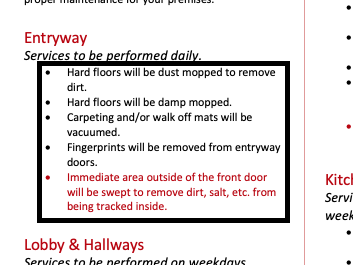

FORMATTING GUIDELINES
This tool is used to convert a Service Agreement ".docx" file to a Building Inspection Sheet instantly. It requires some simple formatting of the Service Agreement in order to work correctly. Either follow this template to make your Service Agreement, or update your existing Service Agreement to include the following formatting.
DISCLAIMER: This tool is prone to mistakes if the formatting of the Service Agreement is not exact. After using, always do a quick review of the generated BIS to ensure no mistakes were made.
UPDATING STYLES
To update styles as instructed in the upcoming steps, simply select the text you would like to update, right-click on the correct heading in the toolbar, select "Update Heading to Match Selection", and ensure the text is set to the style.
BUILDING NAME
The name of the building as seen at the very beginning of the Service Agreement must be given "Heading 1" style.
AREA NAMES
The name of each area to be cleaned must be given "Heading 2" style.
SECTION TITLES
Each section title must be italicized.
This tool is designed to recognize certain keywords from the section title to correctly identify which tasks get done on which days.
The keywords this tool can recognize are as follows.
Section Keywords
- Individual days/periods
- Services to be performed Monday, Wednesday, Friday etc.
- Services to be performed Weekly/Monthly/Quarterly
- A span of days
- Services to be performed Monday-Friday.
- Services to be performed Monday through Friday
- All available days (will include any days that are included elsewhere in the document)
- Services to be performed Daily/Every day/Nightly/Every night
- Every day of the week
- Services to be performed every day of the week
- Seven days a week
- Seven nights a week
- Seven days per week
- Seven nights per week
- Seven days/week
- Seven nights/week
- Weekdays
- Services to be performed on weekdays
- WARNING: The following will not be recognized by this tool, as it has no way of knowing how to translate them to the BIS.
- Services to be performed as needed
- Services to be performed three days a week (please specify which days)
- Any line item that says somebody other than the IC will do the task (this tool will include it on the BIS as an IC task)
If any of your sections do not include any of the above keywords, the tool will not correctly generate that section on the BIS. If you get a warning about section keywords, please review the BIS carefully and correct mistakes.
LINE ITEMS
The line items under a section must be in a bulleted list.
nested bullets will NOT be properly accounted for. if your Service Agreement includes them, please correct any errors in the generated BIS.

AFTER LAST AREA
Find the first piece of text after the last area, usually "General", and give it "Heading 3" style.